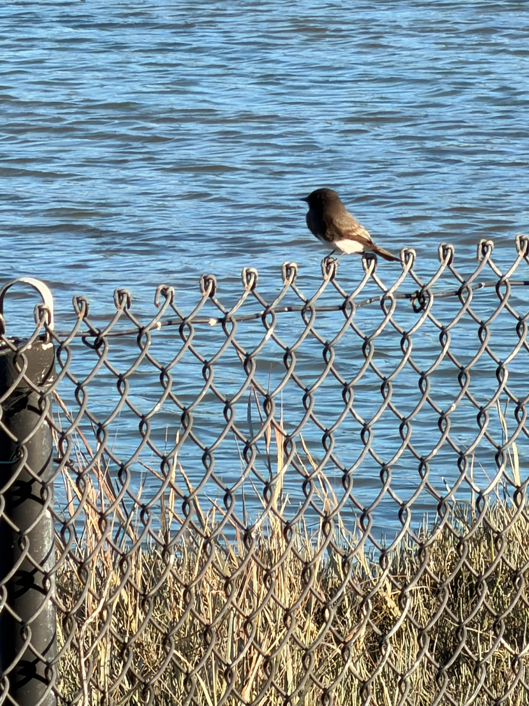

01 / bird photography
Real album-backed bird frames now lead the archive.
travisbarton.com / three-lane archive / April 2026
A personal archive for three recurring lanes: bird photos, nail studies, and small projects led by the robot build.
Bird photos now open with real shared-album picks, the robot trail is already live, and the nail lane stays clearly marked as concept work until finished sets arrive.
01 / bird photography
Real album-backed bird frames now lead the archive.
02 / nail art
Concept tiles hold the place until finished sets arrive.
03 / robot + personal projects
The live robot build log stays front and center.
Three lanes
Minimal, honest, and easy to scan.

Field-note archive, now with real frames
Robot build log
Future set studies
Three pillars
The homepage already has three lanes. This section now just names them, shows their current state, and points you straight at the right place without another card grid.
Real shared-album frames already lead this lane, with room to add species notes, dates, and one sentence about why each image stays.
Open birds
The live robot work stays first, with space for essays, prototypes, and future build notes once they earn a place on the archive.
Open projects
The nail lane stays explicit about being concept-first, so future finished photos can drop into a structure that already has clear rhythm and labels.
Open nails

00 / about
By day, I’m a machine learning engineer at Meta. This site is for the other stuff: robotics projects, AI tooling side quests, bird photos that deserve better organization, and nail art I actually want to keep.
I like building things just to see if they can exist, then turning the useful ones into notes, demos, and public build logs. If it survives long enough to matter, it should probably have a home.
Main interests
AI tools, real-world robots, birding, visual experiments
What this site is for
Keeping the good artifacts instead of letting them disappear into chats and camera rolls
Elsewhere
GitHub for code, LinkedIn for the standard professional version
01 / bird photography
This lane now opens with real frames from Travis's shared iCloud album, with room for a fuller archive pass and richer metadata later.
Album source
These first bird images come from the shared album Pokédex, which now acts as the source of truth until the full local archive is checked in.


02 / personal projects and blog
The homepage points straight at the robot project first, then leaves room for essays, experiments, and future build logs without falling back to a generic portfolio grid.
Featured now
My favorite side projects usually involve sensors, a slightly unreasonable end state, and a strong excuse to learn a new stack. Rover is the clearest version of that instinct: a ROS2 robot that is slowly turning into the kind of machine you can call from another room.
Now
Bring-up, sensors, web control, and a stable base for demos.
Next
Mapping, autonomy experiments, and more public notes from the process.
Why it leads the homepage
ROS2 robot platform on a Raspberry Pi with sensors, mapping, a web control layer, and a very clear roadmap.
Open project
Why applied ML systems win on interface and operations design more often than raw model quality.
Read essay
The broader trail: prototypes, robot work, and whatever else is currently getting pushed into version control.
Visit profile
Archive index
03 / nail art
Finished nail photos will come later, so the homepage now treats these as named concept directions instead of fake completed archive entries.
Current format
Each card already has a visual direction, palette cue, and caption rhythm, so swapping in finished set photos later becomes a content update instead of a homepage rewrite.